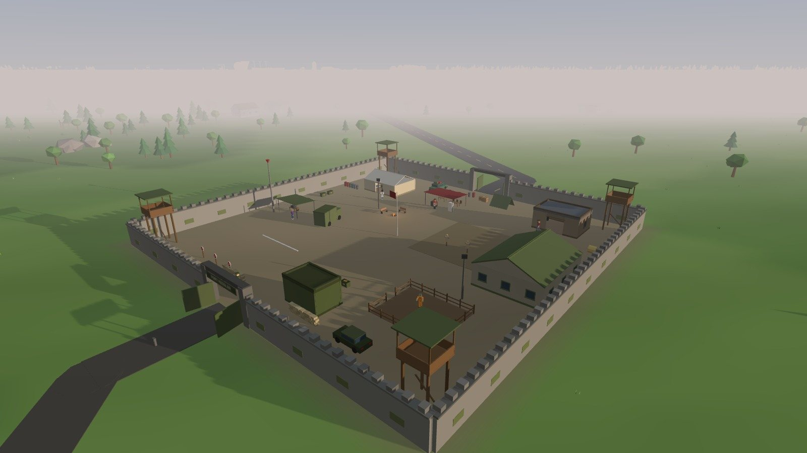
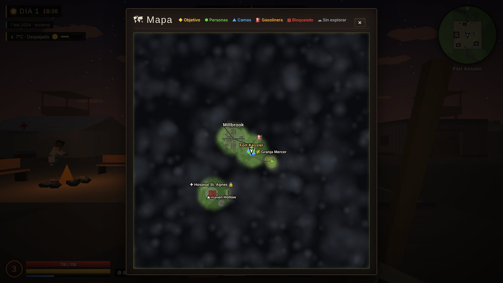
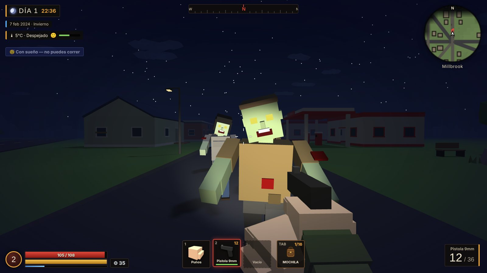
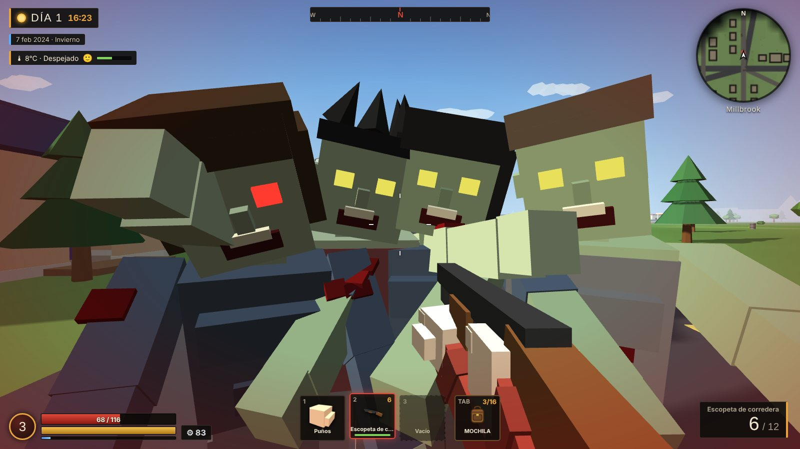
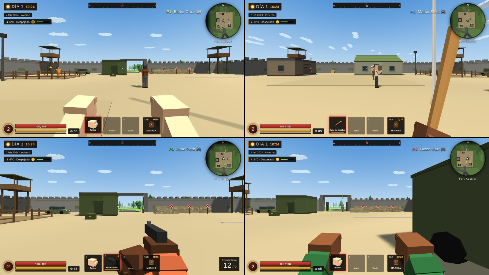

Un juego de supervivencia zombi en un valle enorme. Despiertas en Fort Kessler, el último refugio que queda, y desde ahí sales a buscar suministros, cumplir misiones y averiguar qué pasó en Millbrook. Solo o con hasta tres amigos en el mismo PC.
…un tranquilo laboratorio a las afueras de Millbrook cometió un error. Verdant Biotech lo llamó Proyecto LAZARUS: un tratamiento para devolver la vida a cerebros moribundos. No devolvió nada. Vació a la gente por dentro.
Los infectados dejaron de ser personas. Los supervivientes los llaman Huecos. El ejército evacuó a quien pudo y, una a una, las radios se quedaron en silencio.
A ti te encontraron inconsciente junto a un autobús de evacuación estrellado en la Autopista 9. Ahora despiertas en Fort Kessler, con el sargento Reyes esperando a que te pongas en pie.
Una historia en dos actos, con final.
Cómo se vive en el valle

Fort Kessler, tu casa
Dentro de los muros vive gente con nombre y con sus propios problemas: la doctora, el mecánico, la cocinera, los soldados. Pasean por el fuerte, te encargan trabajos y se asustan de verdad cuando los Huecos se acercan.
Cada pocos días el fuerte sufre un ataque al amanecer. Si estás dentro, te toca defenderlo.

Un mapa que se descubre a pie
El valle es aleatorio en cada partida y empieza cubierto de nubes negras. Al llegar a un sitio nuevo aparece «Nueva zona desbloqueada» y el mapa se aclara a tu alrededor.
Para ir lejos tienes la camioneta, siempre que encuentres gasolina.

La noche cambia las reglas
De noche no se puede correr y ves mucho menos. La linterna ayuda, pero los Huecos también ven la luz. Lo sensato es volver a una cama antes de que oscurezca.
Estaciones con su temperatura: en invierno el frío pasa factura, así que busca calor y comida caliente.
Lluvia, niebla, nieve y alguna luna de sangre.

Pelear cuesta caro
Puños, bates, machetes, hachas, pistolas, escopetas y rifles. Puedes bloquear, contraatacar y lanzar piedras o cócteles molotov. Todo se desgasta, así que conviene llevar un kit de reparación.
Los disparos hacen ruido, y el ruido atrae a más Huecos.

De 1 a 4 en el mismo PC
Conecta mandos y jugad a pantalla dividida, cada uno con su personaje. En Ajustes eliges cómo se reparte la pantalla: arriba y abajo, lado a lado, columnas, cuadrícula…
Hay tres ranuras de guardado para llevar varias partidas a la vez.
Capturas
Descargar Hollow Days
Es un único archivo, HollowDays.exe. No hace falta instalar nada: lo descargas, lo abres y a jugar. Tus partidas se guardan solas en el PC.
DescargaPulsa el botón rojo. Si el navegador pregunta, elige «Conservar».
ÁbreloHaz doble clic en HollowDays.exe. La primera vez tarda unos segundos en arrancar.
Si sale un avisoPulsa «Más información» y después «Ejecutar de todas formas». Lo explicamos abajo.
Acceso directoEl juego te preguntará si quieres un icono en el escritorio. Pulsa F11 para pantalla completa.
¿Windows o tu antivirus te avisan?
No te preocupes, es normal y el juego es seguro.
Pasa con la mayoría de los .exe que descargas de webs pequeñas o de juegos independientes. Windows desconfía de cualquier programa que no lleve una firma digital de pago (un certificado de editor que cuesta cientos de euros al año) o que todavía no ha descargado mucha gente. No significa que haya nada malo dentro.
En la ventana azul de Windows, pulsa Más información.
Aparecerá el botón Ejecutar de todas formas. Púlsalo.
Solo pasa la primera vez. Después se abre directamente.
Si tu antivirus lo mueve a cuarentena, restáuralo desde el propio antivirus y añádelo a sus excepciones. Si el navegador dice que el archivo «no se descarga habitualmente», elige «Conservar».
Windows protegió su PC
Microsoft Defender SmartScreen impidió el inicio de una aplicación no reconocida. Ejecutar esta aplicación puede poner su PC en riesgo.